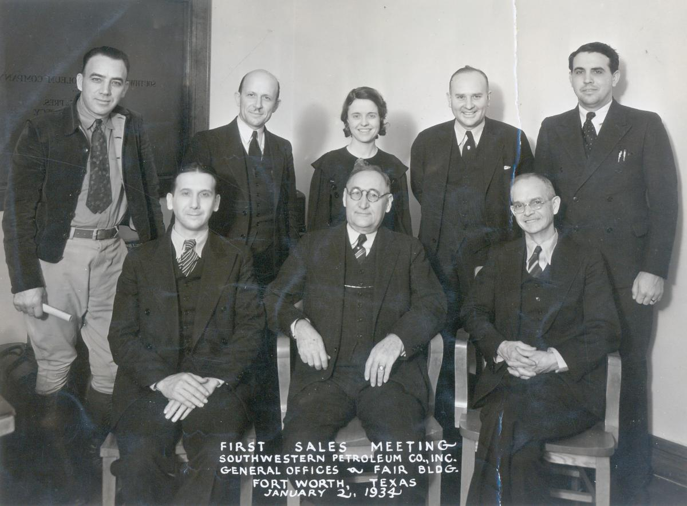
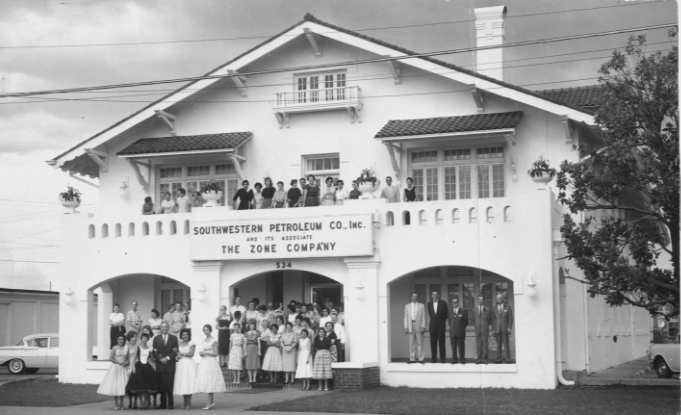
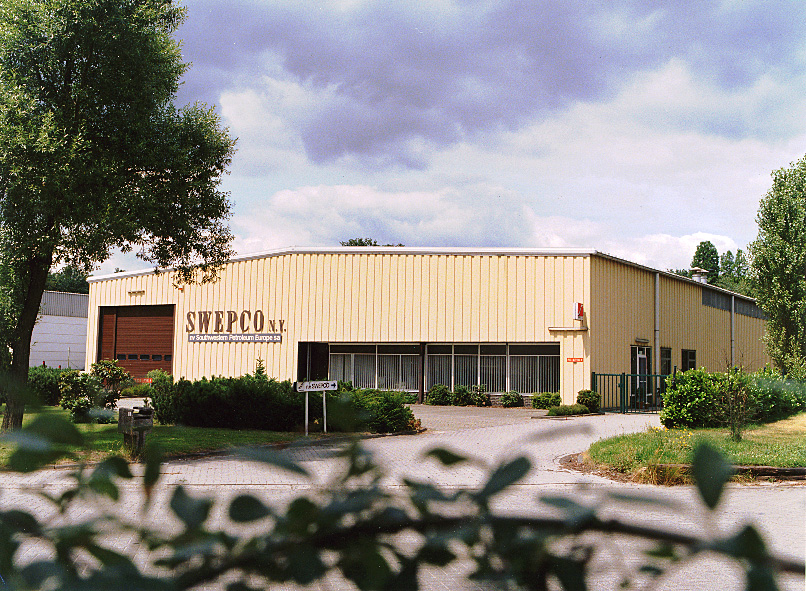
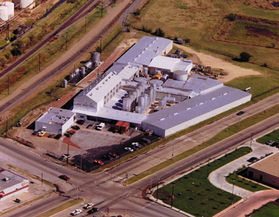
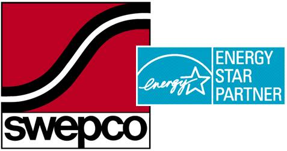

The story of Southwestern Petroleum Corporation begins in 1933. That's the year "Southwestern Petroleum Company, Inc." was started in the darkest hours of the Great Depression. Six Employees And A One Room Office It was hardly a good time to start a new business. But the founders felt they could create a successful company by sticking to a simple philosophy . . . "manufacture and sell the highest  quality products money, skill, experience and effort can produce". The company started out with six employees sharing a one room office. In the beginning, most of the manufacturing work took place outdoors. In just a matter of months, demand forced the first of many expansions that were to follow for Southwestern Petroleum. The 1940's were marked by numerous expansions of both the office and manufacturing facilities, as demand continued to increase. The 1950's brought new challenges in the form of changing technologies. The true level of Southwestern's commitment to remaining a leader in new technologies became apparent in 1954 when the Research and Development Laboratories were tripled in size. Then in the late 1950's, the main offices of Southwestern Petroleum were relocated to a newly remodeled, two-story, 16,000 square foot office building.  The decade of the sixties was an important one for Southwestern Petroleum. In 1963, the "SWEPCO" Brand Name and the first SWEPCO Trademark were created. At the same time, Southwestern began its expansion into Europe with the establishment of company offices and manufacturing in Antwerp, Belgium. Growth was beginning to exceed all expectations. A new 15,000 square foot building was added to the Home Office complex in 1965. By the end of the sixties, the company was in the middle of its third decade and had sales representation in more than 75 countries throughout the world. Sustained growth in export markets during the late 1960's and early 1970's also saw the establishment of company offices and manufacturing facilities near Toronto, Ontario under the banner of Southwestern Petroleum Canada Ltd. By this time, the continued marketing success in Europe had forced the creation of another company owned subsidiary, N. V. Southwestern Petroleum Europe S. A.  Major expansion hit the Home Office again in 1975 when 12,000 more square feet of office space was added to accommodate the growing staff of sales managers required to assist the ever expanding worldwide sales force. According to plan, 6,000 square feet of this new space was needed for immediate use. The other 6,000 was not scheduled to be needed until 1980. But by mid 1977, the new addition and entire Home Office facilities were again filled to capacity.  The 1980's and 1990's offered a continuing series of new marketing challenges with major new product developments, improved computerization for enhanced customer response times. Another important initiative involved the ISO 9000 Certification of our Quality Systems by Bureau Veritas Quality International (BVQI) in the United States and by SGS European Quality Certification Institute in Europe. 